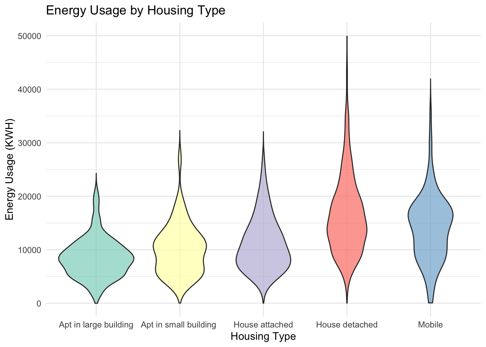

If we want to focus on NY, there are 904 rows altogether
Climate:
(DONE) Geolocation: electricity consumption by the location
Scatterplot and geomsmooth of HDD65 and CDD65 (need to find some other indicators)
what can we suggest?
(DONE) ridgeline (could change into boxplot) plot of electrical consumption by type of habitat.
Socio-economic:
(DONE) Electricity usage vs income bracket, color by whether energy assistance (red color, try to set a different alpha to make it more obvious)
Focus on a specific states (if no clear argument, focus on NY).
Relationship between electricity consumption and price of electricity.
What kind of households should we be targetting?
Barplot of electricity usage and type of housing
(DONE) Electricity usage vs income bracket (facet by type of housing)
barplot of states facet by housing category (which state should focus on which housing category).
LGTINLED: Portion of inside light bulbs that are LED SMARTMETER: Whether there is a smartmeter ATHOME: COOLCNTL: Cooling method of control. HEATCNTL: Heating method of control. TYPETHERM
The following object is masked from 'package:purrr':
map
Code
# Example dataset: Replace 'data' with your actual dataset# Calculate average consumption by statestate_consumption <- energy |>group_by(state_name) |>summarize(avg_consumption =mean(KWH), avg_cost =mean(DOLLAREL),avg_hdd65 =mean(HDD65),avg_cdd65 =mean(CDD65))
Code
# Load US map dataus_map <-map_data("state")# Match state_postal with full state names for joiningstate_consumption <- state_consumption |>mutate(state =tolower(state_name)) |>drop_na()# Merge map and consumption datamap_data <- us_map |>left_join(state_consumption, by =c("region"="state"))# Plotggplot(map_data, aes(x = long, y = lat, group = group, fill = avg_consumption)) +geom_polygon(color ="white") +coord_fixed(1.3) +scale_fill_gradient(name ="Avg. Electricity Usage (KWh)",low ="darkseagreen", high ="salmon", na.value ="gray90") +theme_minimal() +labs(title ="Average Annual Energy Consumption per Household by State",subtitle ="United States Energy Consumption Patterns",x =NULL,y =NULL ) +theme(axis.text =element_blank(),axis.ticks =element_blank(),panel.grid =element_blank() )
First instinct is: South seems to use energy more than the North.
Question: Why does new England and California spend less electricity? Is it because of better weather?
We noticed that the colder areas are in general spending less electricity in general than the hotter areas. While some New England homes do use electric heating, the majority of heating in New England primarily relies on other sources like natural gas, heating oil, and propane, with natural gas being the most common option in densely populated areas; meaning that electricity is not the primary source of heating in New England, but is still used to some extent, particularly with the increasing adoption of electric heat pumps. So this may cause the colder areas to use less electricity in general.
Energy saving are more urgent on the south than on the north.
Other usage of electricity
Code
library(patchwork) # For arranging plots# Plot for HDD65hdd65_plot <-ggplot(map_data, aes(x = long, y = lat, group = group, fill = avg_hdd65)) +geom_polygon(color ="white") +coord_fixed(1.3) +scale_fill_gradient(name ="Avg. HDD65",low ="lightblue", high ="darkblue", na.value ="gray90") +theme_minimal() +labs(title ="Average Heating Degree Days (HDD65)",x =NULL,y =NULL ) +theme(axis.text =element_blank(),axis.ticks =element_blank(),panel.grid =element_blank() )# Plot for CDD65cdd65_plot <-ggplot(map_data, aes(x = long, y = lat, group = group, fill = avg_cdd65)) +geom_polygon(color ="white") +coord_fixed(1.3) +scale_fill_gradient(name ="Avg. CDD65",low ="lightyellow", high ="red", na.value ="gray90") +theme_minimal() +labs(title ="Average Cooling Degree Days (CDD65)",x =NULL,y =NULL ) +theme(axis.text =element_blank(),axis.ticks =element_blank(),panel.grid =element_blank() )# Combine the two plots side by sidecombined_plot <- hdd65_plot + cdd65_plot +plot_layout(ncol =2)# Display the combined plotprint(combined_plot)
Code
library(forcats) # For fct_reorderlibrary(ggridges)custom_colors <-c("Subarctic"='purple',"Very-Cold"='cornflowerblue',"Cold"='skyblue',"Marine"='aquamarine',"Mixed-Humid"='palegreen',"Hot-Humid"='palegoldenrod',"Mixed-Dry"='lightsalmon',"Hot-Dry"='sandybrown')# Calculate the mean for each BA_climatemeans <- energy |>group_by(BA_climate) |>summarize(mean_kwh =mean(KWH, na.rm =TRUE))# Create ridge plot with mean pointsggplot(energy, aes(x = KWH,y =fct_reorder(BA_climate, KWH, .fun = mean, .desc =TRUE),fill = BA_climate)) +geom_density_ridges(alpha =0.7, scale =1) +# Ridge plotgeom_point(data = means, aes(x = mean_kwh, y =fct_reorder(BA_climate, mean_kwh, .desc =TRUE)), color ="black", size =3, shape =24, fill ="white") +# Add mean pointsscale_x_continuous(limits =c(0, 35000)) +# Limit x-axisscale_fill_manual(values = custom_colors) +# Custom fill colorslabs(title ="Ridge Plot of KWH by BA_climate with Mean Annotations",x ="KWH",y ="BA_climate",fill ="Environment type" ) +theme_minimal()
Picking joint bandwidth of 1260
Warning: Removed 150 rows containing non-finite outside the scale range
(`stat_density_ridges()`).
Further suggest that main contributor is the use of airconditioning (or in general, for cooling). - Add some research for this.
Wanna see if the composition in different areas are the same.
Code
# Filter data for selected states# selected_states <- c("NJ")# # filtered_data <- energy |># filter(state_postal %in% selected_states) |># count(BA_climate) |> # Count occurrences of each BA_climate category# mutate(percentage = n / sum(n) * 100) # Calculate percentage composition# # # Bar plot of BA_climate composition# ggplot(filtered_data, aes(x = reorder(BA_climate, -percentage), y = percentage, fill = BA_climate)) +# geom_bar(stat = "identity") +# coord_flip() +# scale_fill_brewer(palette = "Set3") +# labs(# title = "Composition of BA_climate in Selected States",# subtitle = "New York, Connecticut, Massachusetts, New Jersey",# x = "BA_climate Category",# y = "Percentage (%)"# ) +# theme_minimal() +# theme(legend.position = "none")
3.3 Urban environment:
Code
# Ridge plotggplot(energy, aes(x = KWH, y =as.factor(UATYP10), fill =as.factor(UATYP10))) +geom_density_ridges(alpha =0.7, scale =1) +# Ridge plotscale_fill_manual(values =c("C"="skyblue", "U"="lightgreen", "R"="orange"),labels =c("Urban Cluster", "Rural", "Urban"))+scale_x_continuous(limits =c(0, 50000)) +labs(title ="Ridge Plot of KWH by UATYP10",x ="KWH",y ="Urban Type Code (UATYP10)",fill ="Urban Type", ) +theme_minimal()
Picking joint bandwidth of 1050
Warning: Removed 21 rows containing non-finite outside the scale range
(`stat_density_ridges()`).

What are the kind of housing that is causing higher usage
Category 2, which is single-family house detached from any other house.
Code
energy <- energy |>mutate(TYPEHUQ =case_when( TYPEHUQ ==1~"Mobile", TYPEHUQ ==2~"House detached", TYPEHUQ ==3~"House attached", TYPEHUQ ==4~"Apt in small building ", TYPEHUQ ==5~"Apt in large building",TRUE~as.character(TYPEHUQ))) |>mutate(KOWNRENT =case_when( KOWNRENT ==1~"Own", KOWNRENT ==2~"Rent", KOWNRENT ==3~"Occupy wo rent"))ggplot(energy, aes(x =as.factor(TYPEHUQ), y = KWH, fill =as.factor(TYPEHUQ))) +geom_violin(trim =FALSE, alpha =0.7) +# Violin plot with full tailsscale_fill_brewer(palette ="Set3") +scale_y_continuous(limits =c(0, 50000)) +labs(title ="Energy Usage by Housing Type",x ="Housing Type",y ="Energy Usage (KWH)",fill ="Housing Type" ) +theme_minimal() +theme(legend.position ="none")
Warning: Removed 21 rows containing non-finite outside the scale range
(`stat_ydensity()`).
Warning: Removed 186 rows containing missing values or values outside the scale range
(`geom_violin()`).
Percentage of a place/type of housing with poor heating or cooling practices.
1 Set one temperature and leave it there most of the time 2 Manually adjust the temperature 3 Programmable or smart thermostat automatically adjusts the temperature 4 Turn equipment on or off as needed Category 2 and 4 incurs lower energy usage. These are manual practices, which suggests that we should encourage active usage, This is particularly true in xxx states.
Code
# Filter the data to remove unwanted COOLCNTL valuesfiltered_energy <- energy %>%filter(COOLCNTL !=99, COOLCNTL !=-2)# Create a faceted boxplotggplot(filtered_energy, aes(x =as.factor(COOLCNTL), y = KWH, fill =as.factor(COOLCNTL))) +geom_boxplot(alpha =0.7, outlier.shape =NA) +# Boxplot without outliersscale_fill_brewer(palette ="Set3") +scale_y_continuous(limits =c(0, 50000)) +labs(title ="Energy Usage by Cooling Control",x ="Cooling Control",y ="Energy Usage (KWH)",fill ="Cooling Control" ) +facet_wrap(~DIVISION) +# Facet by DIVISIONtheme_minimal() +theme(legend.position ="none")
Warning: Removed 20 rows containing non-finite outside the scale range
(`stat_boxplot()`).
Code
ggplot(energy, aes(x =as.factor(COOLCNTL), y = KWH, fill =as.factor(COOLCNTL))) +geom_boxplot(alpha =0.7, outlier.shape =NA) +# Boxplot without outliersscale_fill_brewer(palette ="Set3") +scale_y_continuous(limits =c(0, 50000)) +labs(title ="Energy Usage by Cooling Habits",x ="check yourself",y ="Energy Usage (KWH)",fill ="Housing Year" ) +theme_minimal() +theme(legend.position ="none")
Warning: Removed 21 rows containing non-finite outside the scale range
(`stat_boxplot()`).
Code
ggplot(energy, aes(x =as.factor(HEATCNTL), y = KWH, fill =as.factor(HEATCNTL))) +geom_boxplot(alpha =0.7, outlier.shape =NA) +# Boxplot without outliersscale_fill_brewer(palette ="Set3") +scale_y_continuous(limits =c(0, 50000)) +labs(title ="Energy Usage by Heating Habits",x ="check yourself",y ="Energy Usage (KWH)",fill ="Housing Year" ) +theme_minimal() +theme(legend.position ="none")
Warning: Removed 21 rows containing non-finite outside the scale range
(`stat_boxplot()`).
Code
ggplot(energy, aes(x =as.factor(KOWNRENT), y = KWH, fill =as.factor(KOWNRENT))) +geom_boxplot(alpha =0.7, outlier.shape =NA) +# Boxplot without outliersscale_fill_brewer(palette ="Set3") +scale_y_continuous(limits =c(0, 50000)) +labs(title ="Energy Usage by Housing Type",x ="Housing Type",y ="Energy Usage (KWH)",fill ="Housing Year" ) +theme_minimal() +theme(legend.position ="none")
Warning: Removed 21 rows containing non-finite outside the scale range
(`stat_boxplot()`).
LED 灯, aircon habit LGTINLED: Portion of inside light bulbs that are LED SMARTMETER: Whether there is a smartmeter ATHOME: COOLCNTL: Cooling method of control. HEATCNTL: Heating method of control. TYPETHERM:
Code
# Categorize and summarize datagrouped_data <- energy %>%filter(COOLCNTL %in%c(1, 2, 3, 4)) %>%# Retain only categories 1, 2, 3, and 4mutate(category_group =case_when( COOLCNTL %in%c(1, 3) ~"Group 1 & 3", COOLCNTL %in%c(2, 4) ~"Group 2 & 4" )) %>%group_by(state_postal, category_group) %>%summarize(mean_kwh =mean(KWH, na.rm =TRUE), .groups ="drop")# Perform statistical teststest_results <- energy %>%filter(COOLCNTL %in%c(1, 2, 3, 4)) %>%mutate(category_group =case_when( COOLCNTL %in%c(1, 3) ~"Group 1 & 3", COOLCNTL %in%c(2, 4) ~"Group 2 & 4" )) %>%group_by(state_postal) %>%summarize(p_value =t.test( KWH[category_group =="Group 1 & 3"], KWH[category_group =="Group 2 & 4"],var.equal =TRUE )$p.value,.groups ="drop" )# Merge test results for visualizationvisualization_data <- grouped_data %>%left_join(test_results, by ="state_postal")library(tidyr) # For pivot_widerlibrary(dplyr)library(ggplot2)# Pivot visualization_data to wider format and calculate net differencedifference_data <- visualization_data %>%pivot_wider(names_from = category_group,values_from = mean_kwh ) %>%mutate(net_difference =`Group 1 & 3`-`Group 2 & 4`) %>%arrange(desc(abs(net_difference))) # Sort by absolute difference for clarity# Cleveland dot plotggplot(difference_data, aes(x = net_difference, y =reorder(state_postal, net_difference))) +geom_point(aes(color = net_difference >0), size =1) +scale_color_manual(values =c("TRUE"="steelblue", "FALSE"="firebrick"),labels =c("Group 2 & 4 Higher", "Group 1 & 3 Higher") ) +labs(title ="Net Difference in Energy Usage Between Groups 1 & 3 vs. Groups 2 & 4",x ="Net Difference (KWH)",y ="State",color ="Higher Group" ) +theme_minimal()